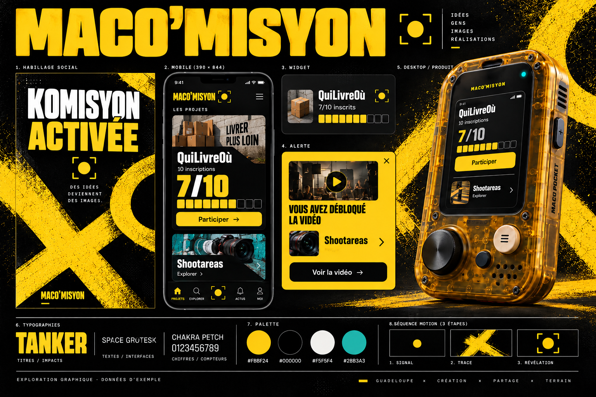

Maco’misyon
Une direction se précise.
Exploration graphique
11 septembre 2026

La planche n’a pas pu être chargée. Le lien ci-dessus ouvre le fichier image.
{kind=link}
Signal × Pocket
Le device ambre de Maco Pocket, les marques de peinture et le jaune vif de Signal jaune.
Couleurs
- #FBBF24
- #000000
- #F5F5F4
- #2BB3A3
Les vraies polices
KOMISYON ACTIVÉE
07 / 10
Tanker pour les titres, Chakra Petch pour les chiffres. Space Grotesk pour lire et agir.
Une participation. Quelque chose se débloque.
Comment elle se déploie
- Mobile
- Le projet et sa jauge en plein écran. Les marques de peinture restent dans les marges.
- Vidéo et posts
- Des titres massifs et de grandes marques de peinture qui signent les épisodes.
- Widget
- Un repère jaune et une jauge sobre pour garder l’objectif lisible sur chaque site.
- Device desktop
- La coque ambrée en 3D de Maco Pocket comme interface dans le navigateur.
Le déblocage, en mouvement
Un point s’allume, le cadre s’ouvre, la vidéo apparaît.
Démo visuelle, aucune publication
Vous avez débloqué la vidéo
Shootareas
Exemple de lien vers la vidéo